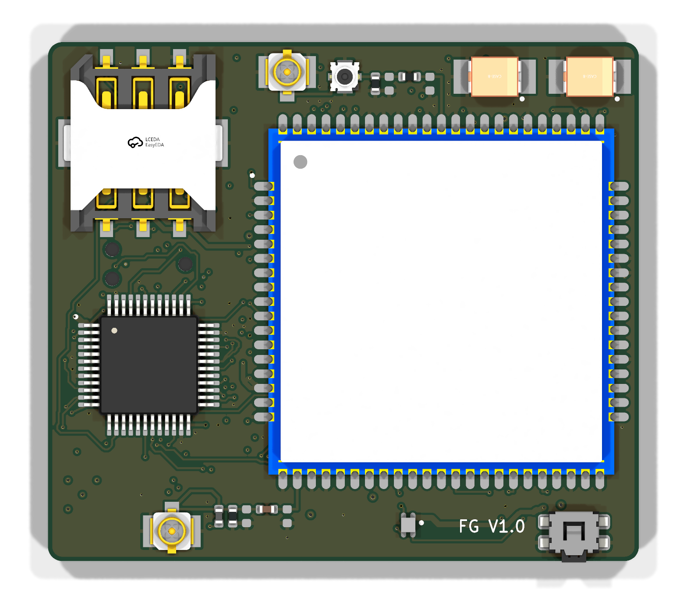
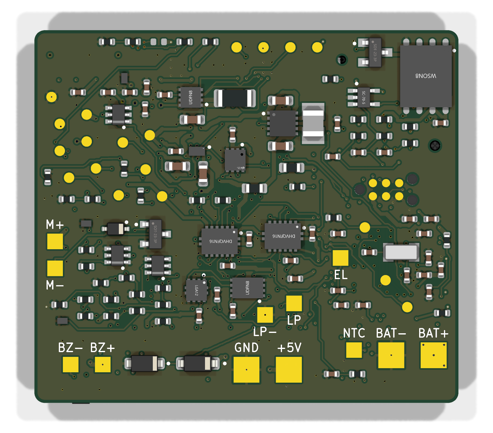
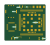

materiel/carte-v1/.
| Tâche | JLCPCB | Vous |
|---|---|---|
| Fabriquer le circuit imprimé 6 couches, impédance contrôlée, finition or (ENIG) | Oui | Choisir les options (section 4) |
| Acheter les 55 références de composants | Oui, sur son stock | Réserver les pièces au stock faible (section 5) |
| Poser et souder les composants sur les deux faces | Oui | — |
| Contrôle optique et radiographie des soudures cachées | Oui | — |
| Vérifier l'orientation de chaque pièce avant la production | Oui, par un technicien | Valider ses éventuelles questions par e-mail |
| Programmer le microcontrôleur | Non | Oui (section 10) |
| Batterie, antennes, vibreur, buzzer, carte SIM | Non | Acheter (section 6), souder (section 11) |
| Boîtier et sangle | Non | Impression 3D (section 13) |
| Essais de fonctionnement | Non | Oui (sections 8 et 12) |
La carte porte un module radio à 124 plots sous son boîtier, un chargeur en boîtier à billes de 1,6 × 0,9 mm et une dizaine de boîtiers sans pattes au pas de 0,4 à 0,5 mm. Ces pièces ne se soudent qu'au four, avec pochoir et contrôle aux rayons X. Un assemblage à la main serait long, incertain et sans contrôle des soudures cachées.
Les points laissés ouverts dans le cahier de réalisation sont tranchés comme suit. Chaque choix est justifié dans
CAHIER.md et dans l'ADR 0042 du dépôt.
| Point | Décision | Raison |
|---|---|---|
| Module cellulaire | SIMCom A7670E-FASE : LTE Cat-1 avec repli 2G, GNSS, Bluetooth | Variante de l'A7670E (bandes d'Europe et d'Afrique) qui intègre le GNSS ; 380 pièces en stock chez JLCPCB. |
| Microcontrôleur | STM32U585CIT6 au lieu du STM32U575CIT6 | Le U575 est en rupture chez JLCPCB. Le U585 a le même brochage et ajoute des accélérateurs cryptographiques, utiles pour l'amorce sécurisée et la protection des données des enfants. Il en reste peu : à réserver (section 5). |
| Batterie | Li-Po une cellule 3,7 V, 600 à 650 mAh, format 603035 (6,0 × 30 × 35 mm), protection intégrée (PCM) d'au moins 3 A, trois fils : +, − et thermistance NTC 10 kΩ (B = 3435) | Le modem tire des pointes de 2 A ; la charge est réglée à 300 mA (0,5 C). Cellule tenant 2C en continu et 3C en impulsion, résistance interne de 150 mΩ au plus, certifiée UN38.3 pour le transport. |
| Hauteur sous la carte | 1,6 mm réservés entre la carte et la batterie | La pièce la plus haute de la face côté batterie mesure 1,35 mm d'après sa fiche ; on ajoute 0,25 mm de mousse isolante. |
| Boîtier V1 | Impression 3D (résine) autour de la carte : cote intérieure 43 × 38 mm, hauteur intérieure d'environ 17,5 mm | Empilement détaillé à la section 13. La V1 sert à valider l'électronique ; l'objectif de 14 mm d'épaisseur du prototype portable demandera une antenne GNSS plate et une batterie plus fine. |
| Circuit imprimé | 6 couches, 1,2 mm, empilement JLC061211-3313 à cuivre interne de 1 oz, impédance contrôlée, vias bouchés dans les pastilles, ENIG | Lignes d'antenne de 50 Ω, module et chargeur au pas fin (section 4). |
| Quantité | 5 cartes assemblées | Une pour le programme, une pour la radio, une pour l'autonomie, deux de réserve ou pour le boîtier. Deux cartes au minimum si le budget l'impose (section 5). |
La création du compte, le paiement et la validation de la commande vous reviennent. Préparez une adresse de livraison à Ouagadougou avec un numéro de téléphone joignable par le transporteur.
Tout est dans materiel/carte-v1/fabrication/ :
| Fichier | Rôle |
|---|---|
gerber-fasoguardian-v1.zip | Le circuit imprimé : 6 couches de cuivre, vernis, pâte à souder, sérigraphie, contour, perçages |
nomenclature-jlcpcb.csv | La liste des composants (BOM), une ligne par référence LCSC |
placement-jlcpcb.csv | La position et l'orientation de chaque composant sur les deux faces (CPL) |
COMMANDE.md | Le récapitulatif technique des options, à garder sous la main |
gerber-fasoguardian-v1.zip. Le site affiche un aperçu, lit
6 couches et 41 × 36 mm. Si ce n'est pas le cas, s'arrêter : mauvais fichier.| Option du site | Valeur à choisir | Pourquoi |
|---|---|---|
| Base Material | FR-4 | Standard |
| Layers | 6 | Lu dans les fichiers |
| PCB Qty | 5 | Cinq cartes |
| Delivery Format | Single PCB | JLCPCB ajoute les rails d'assemblage |
| PCB Thickness | 1.2 mm | Épaisseur calculée pour les antennes |
| Impedance Control | Yes, JLC061211-3313 | Lignes d'antenne de 50 Ω (apparaît une fois le cuivre interne réglé à 1 oz) |
| Via Covering | Epoxy Filled & Capped | Vias dans les pastilles ; gratuit en 6 couches |
| Min via hole size / diameter | 0.15 mm / 0.3 mm | Plus petits vias de la carte |
| Surface Finish | ENIG | Pas fin, contacts de la SIM |
| Outer / Inner Copper Weight | 1 oz / 1 oz | Courant du modem : 20 mΩ de cuivre au lieu de 33 mΩ |
| Mark on PCB | Remove Mark | Pas de numéro de commande imprimé sur la carte |
| Confirm Production file | Yes | Vous validez les fichiers de production avant fabrication |
| Option du site | Valeur à choisir | Pourquoi |
|---|---|---|
| PCBA Type | Standard | Seule formule qui assemble les deux faces |
| Assembly Side | Both Sides | Composants sur les deux faces |
| PCBA Qty | 5 | Deux au minimum |
| Edge Rails / Fiducials | Added by JLCPCB | Carte trop petite pour la machine : JLCPCB ajoute deux rails |
| Confirm Parts Placement | Yes | Un technicien vérifie l'orientation de chaque pièce |
nomenclature-jlcpcb.csv comme BOM et
placement-jlcpcb.csv comme CPL. Si le site demande à quoi correspondent les colonnes :
Comment, Designator, Footprint, LCSC Part #.Edge rails on the LEFT and RIGHT sides only: SW1 overhangs the bottom board edge by 0.3 mm. Controlled impedance: 50 ohm coplanar waveguide on L1 (0.186 mm track, 0.15 mm gap), referenced to L2, stackup JLC061211-3313 (1 oz inner copper). Via-in-pad: epoxy filled and capped. Bottom side rotations in the CPL follow the JLCPCB convention (180 deg minus the KiCad angle). Please check pin 1 of every IC against its silkscreen dot, on both sides. Test points (TP*) and J7 (Tag-Connect pads) are bare pads: nothing to place.
Le bouton SOS dépasse du bord inférieur de la carte. Un rail posé sur ce bord gênerait le bouton. La remarque demande donc les rails sur les bords gauche et droit uniquement ; vérifiez-le sur le fichier de production.
| Poste | Montant | Remarque |
|---|---|---|
| Composants (55 références, pertes machine comprises) | ≈ 250 $ | Prix JLCPCB du 25/10/2026 (outils/stock_jlc.py) |
| Circuit imprimé 6 couches, ENIG, impédance, cuivre interne de 1 oz, vias bouchés | 50 à 100 $ | Selon les promotions du moment |
| Mise en route de l'assemblage double face | ≈ 50 $ | Forfait |
| Pochoirs (deux faces) | ≈ 16 $ | Forfait |
| Chargement des 55 références sur la machine | ≈ 85 $ | ≈ 1,5 $ par référence |
| Radiographie des soudures cachées | 40 à 90 $ | Une douzaine de pièces par carte |
| Soudures et contrôle des pièces | ≈ 10 $ | Au point de soudure |
| Transport DHL vers Ouagadougou | 35 à 70 $ | Selon le poids et le moment |
| Total indicatif | 560 à 720 $ | Hors droits et taxes à l'importation |
Ces montants viennent des grilles publiées par JLCPCB et des prix de ses composants à la date du guide. Seul le devis affiché avant le paiement fait foi.
Assembler 2 cartes au lieu de 5 ramène le total vers 390 à 500 $ : les forfaits restent, les composants baissent de moitié environ. Commander 5 circuits imprimés et n'en faire assembler que 2 est possible.
| Étape | Durée habituelle |
|---|---|
| Examen des fichiers, questions éventuelles | quelques heures à 1 jour |
| Fabrication du circuit 6 couches | 5 à 7 jours ouvrés |
| Assemblage double face, radiographie | 3 à 5 jours ouvrés |
| Transport DHL jusqu'à Ouagadougou | 4 à 8 jours |
| Dédouanement | variable |
Au 25/10/2026, toutes les références sont en stock pour 5 cartes, mais le STM32U585CIT6 n'en compte que 6. Avant de commander :
python outils/stock_jlc.py 5, qui signale toute ligne en stock insuffisant ;À commander pendant la fabrication des cartes, chez un distributeur (Mouser, DigiKey, LCSC, ou Electro Lab à Ouagadougou pour l'outillage courant).
| Article | Caractéristiques | Qté | Usage |
|---|---|---|---|
| Programmateur | ST STLINK-V3MINIE (≈ 12 $) | 1 | Programmation et mise au point |
| Câble de programmation | Tag-Connect TC2030-CTX-NL-STDC14 (≈ 43 $) ; pince de maintien TC2030-CLIP conseillée | 1 | Relie le programmateur aux pastilles J7, sans connecteur soudé |
| Alimentation de laboratoire | 0 à 30 V, 0 à 3 A, limitation de courant réglable | 1 | Premières mises sous tension |
| Multimètre | Tension, résistance, continuité | 1 | Contrôles |
| Batterie | Li-Po 603035, 3,7 V, 600 à 650 mAh, PCM ≥ 3 A, 3 fils dont NTC 10 kΩ B3435, UN38.3 | 6 | Une par carte et une de réserve |
| Antenne LTE | Antenne souple (FPC) multibande 698 à 2 700 MHz, câble de 50 à 100 mm avec prise U.FL (par exemple Molex 146153-0100) | 5 | Liaison cellulaire, sur J3 |
| Antenne GNSS active | L1 1 575 MHz, amplificateur intégré alimenté sous 3 V (plage 2,7 à 3,6 V), câble avec prise U.FL | 5 | Position, sur J4 |
| Buzzer | Transducteur piézo passif (sans oscillateur), Ø 12 à 20 mm | 5 | Alarme sonore |
| Vibreur | Moteur à balourd (ERM) en pastille Ø 10 mm, 3 V, 80 mA au plus | 5 | Alerte par vibration |
| Carte SIM | Nano-SIM avec forfait données (Orange, Moov ou Telecel), code PIN désactivé | 2 à 3 | Essais réseau |
| Soudure | Fer à panne fine, étain fin avec flux, flux en stylo, tresse, fil souple AWG 28 à 30, gaine thermorétractable, loupe ou microscope | — | Câblage des éléments externes |
Elle limite le courant : si une carte a un défaut, l'alimentation plafonne le courant au lieu de laisser brûler une piste ou un composant. Ne mettez jamais une carte neuve sous tension directement sur une batterie.
Les plans ci-dessous situent tout ce qu'on soude ou mesure. La face inférieure est dessinée vue de dessous, telle que vous la voyez en la retournant.

montage-face-superieure.pdf et
montage-face-inferieure.pdf.En mode résistance, pointe noire sur TP7 (GND), mesurer chaque rail :
| Point | Rail | Attendu |
|---|---|---|
| TP3 | VBAT | Plus de 100 Ω, qui monte en quelques secondes (les condensateurs se chargent). Moins de 10 Ω : court-circuit, ne pas alimenter la carte. |
| TP4 | VSYS | |
| TP5 | 3V3 | |
| TP6 | VBAT_MODEM | |
| TP16 | 1V8 du module |
| Point | Attendu | Signification |
|---|---|---|
| TP4 (VSYS) | 4,4 à 4,6 V | Le chargeur alimente le système à 4,5 V (réglage d'usine) |
| TP5 (3V3) | 3,25 à 3,35 V | Le régulateur fournit la logique |
| TP6 (VBAT_MODEM) | 0 V | Le modem reste coupé tant que le programme ne l'allume pas |
| TP16 (1V8) | 0 V | Le module est éteint |
| TP3 (VBAT) | peut varier | Sans batterie, le chargeur cherche une cellule : normal |
Le bloc d'alimentation fonctionne. Notez les valeurs pour chaque carte : elles serviront de référence.
La thermistance NTC fait suspendre la charge hors de la plage de température sûre. Sans elle, le chargeur refuse de charger : c'est voulu.
Le cœur du logiciel du bracelet (règles d'alerte, zones, file des positions) est écrit et essayé sur ordinateur. Sa partie propre au matériel, le « port » STM32U585 (pilotes, FreeRTOS, amorce sécurisée), s'écrit sur ces cartes : c'est la prochaine étape de développement. Le premier programme chargé est un programme d'essai de la carte qui allume le modem, lit les capteurs et pilote LED, buzzer et vibreur.
.elf ou .hex) avec Download, puis
Disconnect : le programme démarre.En cas d'échec de connexion : vérifier l'alimentation (TP5 à 3,3 V), que la tête est bien à plat sur J7, et essayer à vitesse réduite (Frequency 1 000 kHz).
Toutes les pastilles de câblage sont sur la face inférieure, marquées en sérigraphie. Utiliser du fil souple fin, isoler chaque soudure par une gaine.
| Élément | Pastilles | Remarque |
|---|---|---|
| Batterie | BAT+, BAT−, NTC | Section 9 ; un fil à la fois |
| Connecteur de charge | +5V, GND | Vers le connecteur magnétique du boîtier ; protégé contre l'inversion et les surtensions jusqu'à 12 V |
| Buzzer piézo | BZ+, BZ− | Le sens n'importe pas pour un piézo passif |
| Vibreur | M+ (fil rouge), M− (fil noir) | Inverser les fils change seulement le sens de rotation |
| Boucle de la sangle | LP, LP− | Les deux extrémités du fil conducteur de la sangle ; boucle ouverte = alerte d'arrachement. Pour les essais : un simple fil entre LP et LP− |
| Électrode de peau | EL | Plaque métallique au dos du boîtier ; détecte le port du bracelet |
| Connecteur | Face | Remarque |
|---|---|---|
| J3 · antenne LTE | supérieure | Clipser la prise U.FL bien d'aplomb ; ne jamais émettre sans antenne |
| J4 · antenne GNSS | supérieure | Antenne active, alimentée sous 3 V par le module à travers J4 |
| J5 · nano-SIM | supérieure | Puce vers la carte, coin coupé selon le dessin du support |
| J6 | supérieure | Commutateur de mesure conduite pour les essais radio en laboratoire : ne rien y brancher |
Avec le programme d'essai, dans l'ordre :
| Essai | Méthode | Attendu |
|---|---|---|
| LED, buzzer, vibreur | Commande du programme d'essai | Couleurs rouge, verte, bleue ; son ; vibration |
| Bouton SOS | Appui long de 3 s | Le programme signale l'appui |
| Allumage du modem | Le programme ferme l'interrupteur du modem et appuie sur PWRKEY | TP6 ≈ tension batterie, TP16 = 1,8 V |
| Réseau | SIM insérée, antenne LTE en place | Inscription sur le réseau en moins d'une minute |
| GNSS | À l'extérieur, ciel dégagé | Première position en quelques minutes |
| Accéléromètre, jauge, mémoire | Lecture par le programme | Valeurs cohérentes, aucune erreur de bus |
| Charge | 5 V sur +5V / GND, batterie à mi-charge | Environ 300 mA avec le programme ; arrêt à 4,2 V |
| Consommation en veille | Analyseur de consommation sur BAT+ (pastille prévue) | À comparer au budget d'énergie du document de conception |
Le module peut aussi être piloté directement par commandes AT depuis un ordinateur : fils USB sur TP11 (VBUS), TP12 (D+), TP13 (D−) et GND, une fois le modem allumé par le programme. La mise à jour du logiciel du module passe par ce même accès, avec TP10 (USB_BOOT).
| Couche, du fond vers le couvercle | Épaisseur |
|---|---|
| Batterie 603035 et marge de gonflement en fin de vie (≈ 8 %) | 6,5 mm |
| Mousse isolante et composants de la face inférieure (1,35 mm au plus) | 1,6 mm |
| Carte (1,2 mm ± 10 %) | 1,3 mm |
| Face supérieure : module (2,4 mm), prises U.FL connectées (2,5 mm au plus) | 2,6 mm |
| Jeu et antenne GNSS active posée au-dessus du module | ≈ 5,5 mm |
| Hauteur intérieure | ≈ 17,5 mm |
Cote intérieure : 43 × 38 mm (carte de 41 × 36 mm et 1 mm de jeu par côté). Prévoir le passage du bouton SOS dans
la paroi du bord inférieur, et celui des câbles d'antenne. Le modèle 3D de la carte
(carte-fasoguardian-v1.step) sert de référence pour le dessin du boîtier.
| Dans le dépôt | Contenu |
|---|---|
materiel/carte-v1/fabrication/ | Fichiers à envoyer à JLCPCB, COMMANDE.md, plans de montage, schéma en PDF, modèle 3D, rendus |
materiel/carte-v1/guide/ | Ce guide et ses plans |
materiel/carte-v1/CAHIER.md | Cahier de réalisation : contraintes, écarts justifiés, décisions |
docs/adr/0042-carte-v1-du-bracelet.md | Décisions d'architecture de la carte |
materiel/carte-v1/conception/carte.py | Source unique : composants, valeurs, liaisons |
materiel/carte-v1/kicad/ | Projet KiCad (schéma, carte) et rapports de contrôle |
materiel/carte-v1/outils/stock_jlc.py | Contrôle du stock et du coût des composants avant commande |
Les constats sur les cartes réelles (mesures, défauts, accord des antennes) alimentent la version suivante :
réseau d'adaptation des antennes réglé par mesure, valeurs ajustées dans carte.py, puis la chaîne de
conception rejouée pour produire une V1.1 ou le prototype portable.